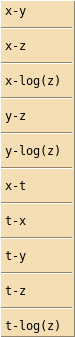
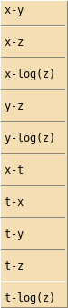

Horizontal and vertical axes menu¶
Clicking on the menu button to the left of the View data button allows the selection of the horizontal and vertical axes which will be used when the View data or Plot data buttons are clicked.
Clicking on the menu button to the left of the View data button allows the selection of the horizontal and vertical axes which will be used when the View data or Plot data buttons are clicked.
